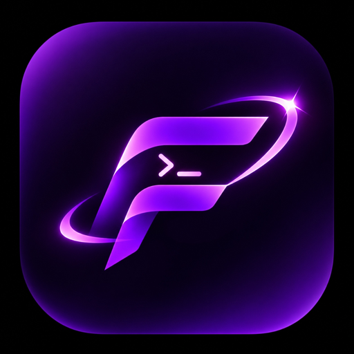

FYXXSSHAbra tanto o terminal interativo quanto o explorador de arquivos SFTP diretamente na pasta do seu projeto em 1 clique. Rápido, moderno e sem burocracia.
Esqueça ter que abrir em /root/ e dar cd /opt/app toda vez. Salve atalhos e acerte o diretório na hora.
Edite arquivos, faça uploads com arrastar e soltar e rode comandos simultaneamente com divisão em tempo real.
Projetado do zero para desenvolvedores, sysadmins e operadores de VPS
Cadastre atalhos para suas aplicações remotas (ex: /opt/fyxxdrops-web/). Ao conectar, o Terminal e o SFTP já abrem na pasta certa.
Arraste arquivos da Área de Trabalho do Windows para o servidor, e do servidor de volta para o Windows nativamente.
Otimizado com os ciphers OpenSSH modernos mais velozes (ChaCha20-Poly1305 e AES-128-GCM) para taxas ultra-rápidas.
Ao transferir arquivos duplicados, escolha substituir, renomear ou pular com a opção de "Aplicar para todos os arquivos".
Monitore o consumo de CPU, Memória RAM, Uso de Disco e Tempo de Atividade (Uptime) do servidor em uma barra discreta.
Alterne entre modo Split Vertical, Horizontal, Foco em Terminal ou Foco em Arquivos, com temas Obsidian, Cyberpunk e Dracula.